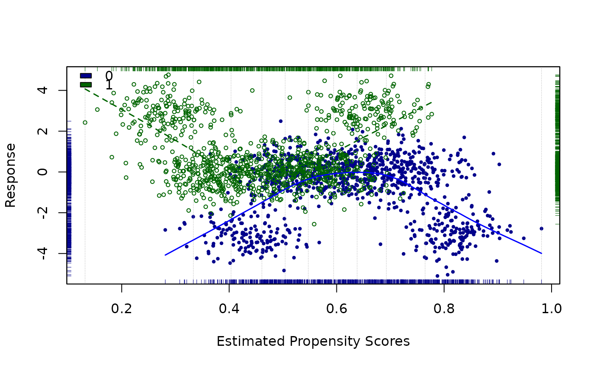

R/loess.psa.R
loess.psa.RdPlots data points using propesity scores vs. the response, separately for treatment and control groups; points are distinguished by both type and color for the two groups. Also shows (non-linear, loess-based) regression curves for both groups. The loess regresion curves are then used to derive an overall estimate of effect size (based on number and/or location of strata as set by the user). Several other statistics are also provided, for both description and inference. Graphic motivated by a suggestion of R. L. Obenchain.
loess.psa(
response,
treatment = NULL,
propensity = NULL,
family = "gaussian",
span = 0.7,
degree = 1,
minsize = 5,
xlim = c(0, 1),
colors = c("dark blue", "dark green", "blue", "dark green"),
legend.xy = "topleft",
legend = NULL,
int = 10,
lines = TRUE,
strata.lines = TRUE,
rg = TRUE,
xlab = "Estimated Propensity Scores",
ylab = "Response",
pch = c(16, 1),
...
)Either a numeric vector containing the response of interest in a propensity score analysis, or a three column array containing response, treatment and strata.
Binary variable of same length as response; 0 for
'control,' 1 for 'treatment.'
Numeric vector of estimated propensity scores.
Passed to loess. Either "gaussian" (default) or
"symmetric".
Parameter passed to loess governing degree of smoothing. Default = 0.7.
Parameter passed to loess governing degree of polynomials used. Default = 1
Integer. Determines the minimum number of observations in each stratum treatment group allowed. If one of the treatment groups in a given statum does not meet this minsize, then all observations in this stratum are ignored as far as the effect size calculation is concerned.
Binary vector (min, max) providing the horizontal axis
minimum and maximum. Default is c(0, 1).
List of four colors used for control points, treatment points,
control loess line, treatment loess line respectively. Default =
c("seagreen3", "goldenrod1", "seagreen4", "goldenrod3").
Coordinates for legend box, see legend. Default =
"topleft".
Binary character vector containing the text of the legend.
Default is taken from treatment.
Integer or ordered vector. If an integer is used, it represents the maximum number of equally sized strata. Alternatively, it may be a vector of cuts of the unit interval. Lower and upper ends need not be included. See examples. Default = 10.
Logical; fitted loess values are plotted by default as points. If true, values are plotted as two lines.
Logical; default = TRUE. Creates light vertical
lines that delineate strata.
Logical; if TRUE (default) then rug plots are given for
treatment and control propensity score and response distributions.
X axis label, default = "Estimated Propensity Scores".
Y axis label, default = "Response".
Character types for plotted points, default = c(16, 1).
Note: must be of length 2 to allow different plotting points for each
treatment.
Optional parameters passed to points command.
In addition to the plot, the function returns a list with the following components:
Estimated effect size based upon (number
of) strata defined by int; that is, this is the Average Treatment
Effect, after propensity-based adjustment.
Weighted standard error based on pooling of within-strata variance estimates.
Approximate 95% confidence interval for the overall effect
size (conditional on the specification of int).
A table with rows corresponding to strata; first two columns show counts (by statum) for both control and treatment; followed by mean differences for all strata. for control and treatment, followed by mean differences for all strata. The weighted average difference yields the effect size noted above.
#Artificial example where ATE should be 1 over all of (0,1).
response1 <- c(rep(1, 100), rep(2, 100), rep(3, 100)) + rnorm(300, 0, .5)
response0 <- c(rep(0, 100), rep(1, 100), rep(2, 100)) + rnorm(300, 0, .5)
response <- c(response1, response0)
treatment <- c(rep(1, 300), rep(0, 300))
propensity <- rep(seq(.01, .99, (.98/299)), 2)
a <- data.frame(response, treatment, propensity)
loess.psa(a, span = .15, degree = 1, int = c(0, .33, .67, 1))
#> $ATE
#> [1] 1.0733
#>
#> $se.wtd
#> [1] 0.0428952
#>
#> $CI95
#> [1] 0.9875095 1.1590903
#>
#> $summary.strata
#> counts.0 counts.1 means.0 means.1 diff.means
#> 1 98 98 -0.05287655 1.081601 1.134478
#> 2 104 104 1.04008221 2.019019 0.978937
#> 3 98 98 1.95019935 3.062462 1.112262
#>
#Artificial example where estimates are unstable with varying
#numbers of strata. Note: sometimes get empty treatment/strata error.
rr <- c(rnorm(150, 3, .75), rnorm(700, 0, .75), rnorm(150, 3, .75),
rnorm(150, -3, .75), rnorm(700, 0, .75), rnorm(150, -3, .75))
tt <- c(rep(1, 1000),rep(0, 1000))
pp <- NULL
for(i in 1:1000){pp <- c(pp, rnorm(1, 0, .05) + .00045*i + .25)}
for(i in 1:1000){pp <- c(pp, rnorm(1, 0, .05) + .00045*i + .4)}
a <- data.frame(rr, tt, pp)
loess.psa(a, span=.5, cex = .6)

#> $ATE
#> [1] 2.532093
#>
#> $se.wtd
#> [1] 0.06817575
#>
#> $CI95
#> [1] 2.395742 2.668445
#>
#> $summary.strata
#> counts.0 counts.1 means.0 means.1 diff.means
#> 1 8 192 -3.8223352 1.881367126 5.7037024
#> 2 41 159 -2.6378012 0.606791720 3.2445930
#> 3 90 110 -1.8742198 0.105291082 1.9795109
#> 4 100 100 -1.1394578 -0.003818755 1.1356390
#> 5 98 102 -0.4932621 0.127812458 0.6210746
#> 6 96 104 -0.1492005 0.568058141 0.7172586
#> 7 97 103 -0.0515257 1.204424906 1.2559506
#> 8 121 79 -0.1294953 1.820024938 1.9495202
#> 9 155 45 -0.5618361 2.673102365 3.2349384
#> 10 194 6 -1.9952130 3.483533705 5.4787467
#>
#Using strata of possible interest as determined by loess lines.
data(lindner)
attach(lindner)
#> The following objects are masked from lindner (pos = 3):
#>
#> abcix, acutemi, cardbill, diabetic, ejecfrac, female, height,
#> lifepres, stent, ves1proc
#> The following objects are masked from lindner (pos = 4):
#>
#> abcix, acutemi, cardbill, diabetic, ejecfrac, female, height,
#> lifepres, stent, ves1proc
#> The following objects are masked from lindner (pos = 5):
#>
#> abcix, acutemi, cardbill, diabetic, ejecfrac, female, height,
#> lifepres, stent, ves1proc
#> The following objects are masked from lindner (pos = 6):
#>
#> abcix, acutemi, cardbill, diabetic, ejecfrac, female, height,
#> lifepres, stent, ves1proc
#> The following objects are masked from lindner (pos = 7):
#>
#> abcix, acutemi, cardbill, diabetic, ejecfrac, female, height,
#> lifepres, stent, ves1proc
lindner.ps <- glm(abcix ~ stent + height + female +
diabetic + acutemi + ejecfrac + ves1proc,
data = lindner, family = binomial)
loess.psa(log(cardbill), abcix, lindner.ps$fitted,
int = c(.37, .56, .87, 1), lines = TRUE)
#> $ATE
#> [1] 0.1421567
#>
#> $se.wtd
#> [1] 0.06731032
#>
#> $CI95
#> [1] 0.007536057 0.276777324
#>
#> $summary.strata
#> counts.0 counts.1 means.0 means.1 diff.means
#> 1 78 77 9.364167 9.475623 0.11145618
#> 2 206 507 9.400413 9.589262 0.18884893
#> 3 12 113 9.685568 9.599461 -0.08610724
#>
abline(v=c(.37, 56, .87))